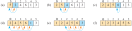

Week 7: Code Examples and Midterm Review
DSAN 5500: Data Structures, Objects, and Algorithms in Python
Class Sessions
Midterm Dress Rehearsal
Today’s Planned Schedule:
| Start | End | Topic | |
|---|---|---|---|
| Lecture | 6:30pm | 7:00pm | Parts ա-գ: Three Mini-Topics → |
| 7:00pm | 7:20pm | Part Ա: Full Topic → | |
| 7:20pm | 7:30pm | Part դ: Mini-Topic → | |
| 7:30pm | 7:50pm | Part Բ: Full Topic → | |
| Break! | 7:50pm | 8:00pm | |
| 8:00pm | 8:40pm | Parts Գ-Դ: Two Full Topics → | |
| 8:40pm | 9:00pm | Parts ե-զ: Two Mini-Topics → |
The Great Wheel of Data-Structural and Algorithmic Fate

Mini-Topics
- Stack-Heap Distinction →
- Big-\(\overline{O}\) Notation →
- Data Validation →
- Linear vs. Logarithmic Design →
- BSTs: DFS vs. BFS →
- Trees vs. Graphs (Cycles) →
Stack-Heap Distinction
- The Stack (\(\neq\)
Stackdata structure)- Fixed-length things go here, including Pointers to Heap
- The Heap (\(\neq\)
Heapdata structure)- Variable-length things go here
- Heap elves manage The Heap, by…
- Constantly “claiming” additional memory from the OS (
malloc()), in case objects need to grow - “Freeing” memory back for use by the OS (
free()), when objects shrink / deleted / Python execution ends
- Constantly “claiming” additional memory from the OS (
Big-\(\overline{O}\) Notation
- These are equivalence classes (not numbers or functions)
- Compute the runtime \(T(n)\) of an algorithm
- Worry about how it scales as \(n\) gets large: \(\lim_{n \rightarrow \infty}T(n)\)
- Decide whether to use it or not based on which equivalence class it converges to:
- \(O(1)\)
- \(O(\log(n))\)
- \(O(n)\)
- \(O(n^2)\)
Data Validation
Linear vs. Logarithmic Design
- Enter the Logarithm demo app
Depth-First vs. Breadth-First Search
- Depth-First is greedy: At any given node, algorithm starts by just following first link until it hits
None!- Only once it hits
Nonedoes it “back up” and follow second link
- Only once it hits
- Breadth-First is patient: Nodes at level \(t + 1\) are not processed (printed) until all nodes at level \(t\) have been processed (printed)
Trees vs. Graphs (Cycles)
- In terms of creating and managing data structures, we start with Trees and move to Graphs
- But, in terms of defining these structures, it helps to start with Graphs
- A graph is just a collection of linked nodes (any number of links): connected if some possible path between any two nodes
- A tree is a connected graph without cycles
- A binary tree is a tree where each node has only two outward links (called children)
- A binary search tree is a binary tree where
- Outward links are labeled
leftandright - [All contents after following
left] \(<\) [current content] - [All contents after following
right] \(>\) [current content]
- Outward links are labeled
Full Topics
Variations on LinkedList
FrontBackLinkedListDeque(Pronounced like “Deck”)DoublyLinkedList
FrontBackLinkedList
- This isn’t exactly a separate data structure from a
LinkedList, but instead an “expansion pack” forLinkedListwhich adds aninsert_front()function
DoublyLinkedList
- For when we need to be able to reverse directions at any point during iteration
LinkedListNodehad only anextpointerDoublyLinkedListNodehas two pointers:prevandnext
Deque
- May seem similar to
FrontBackLinkedList, but this time we do have a (slightly) different data structure! - For when we need to iterate through a list in-order or in reverse order, with exact same complexity!
- (Who can think of a case where this would be immediately useful?)
- Like in
FrontBackLinkedList, we have a newinsert_front()function - Like in
DoublyLinkedList, we have bothprevandnextpointers in eachDequeNode - But, we also add a new pointer in the
Dequeclass itself (not theDequeNodeclass),tail, so that we now havehead(formerly called root) andtail(pointing to the last element in the LL)
Collision-Resistant Hashing
- In general: What properties do we think a “good” hashing algorithm should have?
- More specific: Given \(N\) objects to store and \(M\) available memory slots, what are the limits to \(\overline{O}(1)\)?
- Efficiency when \(N < M\)?
- Efficiency when \(N = M\)?
- Efficiency when \(N > M\)?
- How do these change if we move from
LinkedList-backed toBST-backed?
Object-Oriented Design
- First: What are the two kinds of “things” that an object has?
- What is the difference between a class and an object?
- OML without Polymorphism
- OML with Polymorphism
- Abstract Base Classes (
ABCin Python)
Sorting
- How is Merge-Sort “better”? What role does Merge subroutine play?
- What/where exactly are the invariants in these diagrams?


Midterm Metadata
Midterm Structure
- Coding Portion: Modifications of
LinkedList(Circular / jump-to-end / doubly-linked); non-scary OOP skeleton üôà - Multiple Choice Portion: Lots more to cover‚Ķ
- Hash Tables: \(O(1 + \epsilon \log_2(n))\), but think about it as:
- \(1 + (\text{Collision rate}) \cdot (\text{Collision handler efficiency})\)
- Linked List \(\rightarrow\) Binary Search Tree
- Depth-First vs. Breadth-First: Picture of a tree \(\rightarrow\) (a) what is BFS result, (b) what is (in/pre/post)-order DFS result?
- Lastly: Cormen, Leiserson, Rivest, Stein (CLRS), pgs. 17-106
The Two Boxes That Most Things In This Course Can Be Sorted Into
- Box 1: Linear Things
- Box 2: Logarithmic Things
- Things that go into the boxes:
- Algorithms
- Data Structures
- Software Development Patterns
The Boxes
| Linear Things: \(O(N)\) | Logarithmic Things: \(O(\lg{N})\) | |
|---|---|---|
| Data Structures |
|
|
| Sorting Algorithms | Insertion-Sort | Merge-Sort |
| Search Algorithms | Linear-Search | Binary-Search |
| General Pattern | One-by-One | Divide-and-Conquer |
| Steps to Look Up a Word | \(N = 102118\) | \(\lceil \log_2(N) \rceil = 17\) |


- Hash Table: A “trick” that gets us close to \(O(1)\), by pre-allocating lots of memory!
\[ O(N) \; \underbrace{\leadsto O(\log_2(N))}_{\mathclap{\substack{\text{More Efficient Algorithm} \\ \text{(Free!)}}}} \; \underbrace{\leadsto O(1 + \epsilon\log_2(N))}_{\substack{\text{More Memory} \\ \text{(\$\$\$)}}} \]